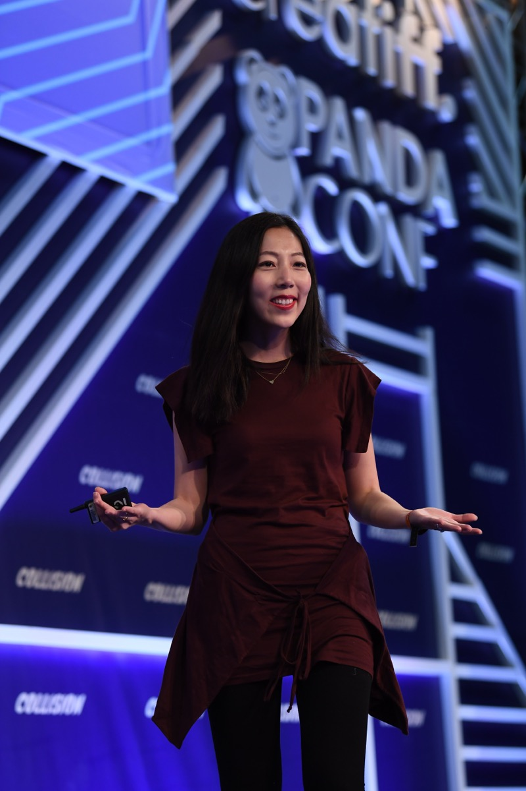

Executive Summary
This article reads Meta's acquisition of Sundial, confirmed on October 23, not as deal news but as a sign that the work of analysis is moving to a different place. Sundial is an analytics company founded in 2021. It built a product that cleans up data, settles what a metric means, and writes the query that goes to the database, so that any team can ask in plain language and get an answer without going through a data team. Both co-founders worked at the company back in its Facebook years, and they now return with the startup they founded.
The contrast in the numbers is what catches the eye. Sundial had raised $23 million in total, and neither side disclosed what Meta paid for it. Across from that sits the $130 billion to $145 billion Meta has set aside for capital expenditure this year, a sum the company says is not for AI alone but carries its existing core business too. What a company spending on that scale picked up this time was not another model but a tool for asking what the money did. Once the deal closes, OpenAI and every other outside customer loses access to the tool.
Sections 1 through 3 follow what a Meta spokesperson confirmed, the announcement post from co-founder Julie Zhuo, and the org structure described by chief data officer Alex Schultz. Section 4, which asks who finds out first when automatically cleaned data turns out to be wrong, is this article's own reading and appears in none of the sources.
Key Figures
Only four numbers are attached to this deal, and the most important one of them is blank.
Sources: Axios exclusive (Yahoo Finance syndication) · TokenPost, on funding and the org · Meta's 2026 capital expenditure guidance
$130–145B
Meta's capital expenditure guidance for this year
By the company's account, money that carries its AI work and its existing business together
$23M
Everything Sundial raised since it was founded
Includes the $16M Series A from July 2025
Undisclosed
What Meta paid for Sundial
Neither Meta nor Sundial named a figure
None
Outside customers Sundial keeps after close
OpenAI, Gamma and the rest have to find another tool
What Meta Bought Is Not a Model
A Meta spokesperson confirmed the Sundial acquisition on October 23. Axios broke the story, and later that night co-founder Julie Zhuo posted the announcement on X. Zhuo and Chandra Narayanan are both joining Meta, along with part of the team including Stanley Watt, Asa Levi and John Maier. Neither side named a price.
Both founders came out of Meta. Zhuo joined Facebook as an intern and rose to vice president of product design; Narayanan was an analytics director at Facebook and head of analytics at Instagram before running analytics at Sequoia Capital. Sundial is reported to have been founded outside Meta in 2021, and the announcement post dates that moment to "nearly six years ago." The same post says the company started before the AI wave arrived and then rebuilt itself to be AI-native. The company they grew outside now goes in with them.

The shape of the deal gets a little clearer when the two numbers sit side by side. At its second-quarter earnings report at the end of July, Meta said it expects capital expenditure of $130 billion to $145 billion this year. Data centers and chips take the largest share, and the company wrote that the money supports its AI efforts and its core business. The shorter phrasing, "$130 billion on AI," comes from press and market commentary rather than from the company. Either way the scale is clear. What that company bought this time was neither a model nor data to feed one. It was a tool for putting questions to data that has already piled up. Answering which model, which cluster, which ad actually paid for itself now looks as urgent as building the model.
Once the deal closes, Sundial takes no outside customers. The product goes inside Meta and disappears from everywhere else. That includes the customers named in the announcement post, which said it had been a privilege to support fast-growing AI companies "from OpenAI to Gamma." A tool OpenAI used to analyze its own data has been bought by a competitor and shut down.
In a deal where a company buys a product and closes it immediately, what usually carries the price is not the product but the people who built it and the methods they accumulated. From what Meta has disclosed, this deal looks close to that shape. But Meta did not name a price, so whether this was paid for the people or for the technology cannot be settled from outside.
Judgment Moves from People into Rules
The announcement post says Sundial "automated away many of the obstacles" on the path to meaningful analysis, and lists four of them: cleaning data, creating semantic layers, writing SQL, and telling the story of the result. When the company introduced itself at its funding announcement in July 2025, it described unifying dashboards, notebooks and data transformation pipelines into a single product; a chatbot plugin that let people ask from inside tools like Slack was the outward face of it.
What the automation actually carried away shows up in one line from a customer. In that same funding release, David Sasaki, VP of Analytics and Insights at OpenAI, said: "Sundial automated complex data engineering tasks that would have taken our small team months to build internally. We went from raw logging to comprehensive data visibility virtually overnight." That is a company document backing up the customer line in the announcement post, "from OpenAI to Gamma."
The second of the four matters most here. A semantic layer is a single place that holds what the words a company uses actually mean. Decide there once what "active user" refers to, from which day it starts counting, which accounts it leaves out, and the same question returns the same answer whether a person asks it or an AI does. Without that layer, different teams walk into the same meeting carrying different numbers.
Lay the four steps out one at a time and it becomes clear what the automation took with it. The left column is the four the announcement post listed; the right column is this article's own account of the judgment that used to sit inside each step.
| What Sundial did for you | The judgment a person used to make there |
|---|---|
| Cleaning data | Which rows to drop and what to put in which blanks, and whether a value that looks strange is an error or a fact |
| Creating semantic layers | Where the count of an "active user" starts and which accounts it leaves out, and what happens to past numbers when that rule changes |
| Writing SQL | Which tables and which joins the question turns into, and whether those tables hold data fit to answer the question being asked |
| Telling the story of the result | What to read a rising number as the result of, and whether another value that moved alongside it changes the explanation |
The judgments in the right column do not disappear once they are automated. They move. They used to sit in the head of the analyst writing the query; now they sit inside rules the tool settled in advance. The person asking never sees those rules, only the answer. That is why self-serve analytics is fast, and the risk this article turns to later comes from the same place.
Opening It Up and Centralizing It at Once
Where the Sundial team lands says a little more about what Meta intends to do with the tool. Alex Schultz became Meta's first chief data officer on July 1, 2026, moving over from running marketing, with a brief to rework how the company learns and decides using AI. A new org called Data Analytics Tooling & Agents sits underneath, known internally by its initials, DATA. Narayanan leads the analytics tooling and agents side of it.

The org's remit is written in four parts: descriptive analysis of what is happening now, finding the questions the company has not yet asked, running experiments such as A/B tests, and watching the quality of AI and data products to raise an alert when something goes off. On LinkedIn, Schultz wrote that "AI has created effectively unlimited demand for insights, and we want to define the future of AI analytics."
One thing here looks like a contradiction. Sundial sold itself on letting each team ask directly without going through a central data team. Meta bought that tool and placed it inside a central org, and one of that org's jobs is to watch quality and raise an alert when something goes off. A product for bypassing the center and an org for building the center arrived in the same announcement on the same day.
There is a way to read it that is not a contradiction. The more you open up the asking, the more you need a place that looks after the material being asked about, and on that reading the two decisions point the same way. Putting a tap in every house and running the water utility are not opposites. The more teams ask directly, the faster one wrong definition travels.
One more fact belongs on this org chart. The list of individual investors in Sundial's July 2025 funding release includes Alex Schultz. The same list includes Meta's chief operating officer, Javier Olivan, and CB Insights records Sundial's Series A as Schultz's most recent investment. That means the head of the org receiving the company Meta bought was also an individual investor in that company. We could not find coverage of this deal that points it out, and because the price is undisclosed there is no further material to weigh it against from outside.
Which reading Meta had in mind when it arranged things this way is not in the announcement. What is confirmed is the arrangement: a tool that lets teams ask directly and an org that watches the quality of what they ask about now sit under one person.
Why Pebblous Is Watching This Deal
Meta's org chart is not something Pebblous needs to follow. The reason to look closely at this deal is the list of four in section 2. Of the obstacles the automation cleared away, the first two are both data quality work.
The last two usually show when they go wrong. A broken query throws an error; a thin explanation makes the reader pause. The first two are different. A wrong cleaning rule still produces a number. A mismatched metric definition still produces a number. A neatly rounded number, in the middle of the chart, with no warning attached. On the receiving end, nothing shows which rules that number stands on, and the reader may not even know such rules exist.
When the question went through a data team, there was a person sitting at that spot. Whoever wrote the query looked at the data along the way, and odd values were usually caught in those hands. When the space between the question and the data empties out, someone has to take that share. For the tool to take it, there has to be a separate mechanism that watches the state of the data, apart from the one that produces answers.
If you are moving toward teams asking directly, four things are worth checking.
- Do the meanings of metrics sit in one place, and does a record of changes survive? When a definition changes quietly, last month's number and this month's number are counts of two different things
- Is what the automated cleaning removed written down? Not just how many rows were dropped but on what criterion, so the judgment can be looked at again later
- Does the state of the data travel with the answer? Whether the person asking sees the as-of date and which stretches are empty, on the same screen as the answer
- Is the side that raises alerts connected to the side that asks? If an alert circulates only inside the data team, the team that already decided on that metric never hears it
None of the four is about replacing the tool; each is about attaching a record beside it. The worth of self-serve analytics lies in increasing the number of people who ask, and as that number grows, the reach of a wrong answer widens with it. What this article reads in the Sundial acquisition is that the means of tracing back has to widen just as far.
Thank you for reading this far. The facts in this article were checked by reading the primary announcements against the reporting Meta confirmed, and anything not made public, such as the price, is written down here as undisclosed. If your teams already ask their own questions of the data, we would like to hear who holds the metric definitions and where you keep the record of what the automated cleaning did.
Pebblous Data Communication Team
October 25, 2026
References
Primary Announcements
- 1.Zhuo, Julie. (2026). "Today, we're announcing that Sundial has been acquired by Meta!" X (@joulee), October 23. Source of the four automated steps, the "nearly six years ago" founding reference, the line about starting before the AI wave and rebuilding the company to be AI-native, and the "from OpenAI to Gamma" customer line.
- 2.Sundial. (2025). "Sundial Raises $23M to Redefine Data-informed Decisions with AI," press release, July 8. Source of the $23M total and the $16M Series A, the institutional and individual investor list (including Alex Schultz and Javier Olivan), the quote from David Sasaki, VP of Analytics and Insights at OpenAI, and the company's self-description of unifying dashboards, notebooks and pipelines into one product. The businesswire.com original was blocked with a 403, and the full text was read through the Silicon UK syndication instead.
Press Coverage
- 3.Axios. (2026). "Exclusive: Meta acquires AI data platform Sundial," October 23. A Meta spokesperson's confirmation. Direct access returned 403, so the full text was cross-checked against the syndication below; the two versions carry no factual difference.
- 4.Yahoo Finance. (2026). "Exclusive: Meta acquires AI data platform Sundial" (syndicated from Axios). Source of the DATA org name, the Schultz quote, and the end of service for outside customers.
- 5.TokenPost. (2026). "Meta Acquires AI Analytics Startup Sundial, Adds Co-Founders and Team," October 23. Source of the $23M in funding and the $16M Series A, and of the date Schultz was appointed chief data officer (July 1, 2026).
- 6.DigitalToday. (2026). "Meta acquires AI data analytics platform Sundial." Independent confirmation of the core facts.
- 7.Yahoo Finance. (2026). "Meta lifts 2026 capex floor to $130 billion as AI spending compresses cash flow," July 30. Source of Meta's 2026 capital expenditure guidance of $130–145 billion, given at the second-quarter earnings report.
Commentary and Analysis
- 8.ExplainX. (2026). "Meta Acquires Sundial: AI Analytics Deal, What Is Confirmed." Source of the plain-language reading of a semantic layer as the shared definition of business terms such as "active user." This piece notes that it could not verify the OpenAI and Gamma customer detail against a primary document; the OpenAI quote in the July 2025 funding release (2) confirms the detail in a company document.
- 9.FourWeekMBA. (2026). "Meta Buys AI Analytics Startup Sundial, Founded by Ex-Staff." Access was refused with a 403, so it could not be checked. Listed for provenance only; no fact in this article rests on it alone.